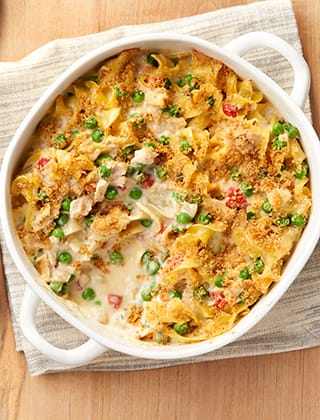

Tuna Casserole

Ingredients
-
3 cups cooked macaroni
-
1 (5 ounce) can tuna, drained
-
1 (10.5 ounce) can condensed cream of chicken soup
-
1 cup shredded Cheddar cheese
-
1 ½ cups French fried onions
Steps
-
Preheat the oven to 350 degrees F (175 degrees C).
-
Combine cooked macaroni, tuna, and condensed soup together in a 9x13-inch baking dish; sprinkle with cheese.
-
Bake in the preheated oven until bubbly, about 25 minutes. Sprinkle with fried onions; bake 5 minutes more.